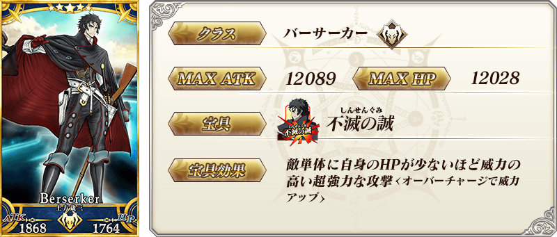
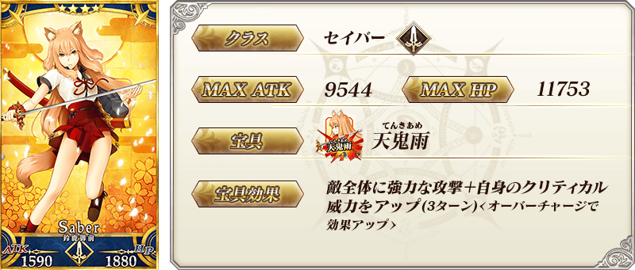
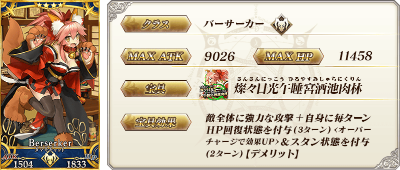
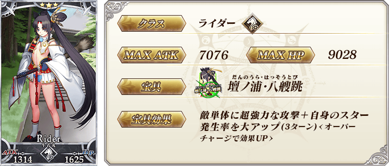
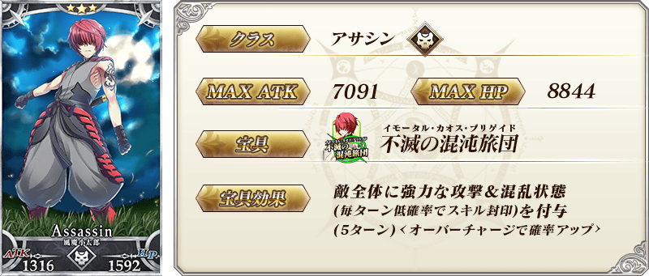
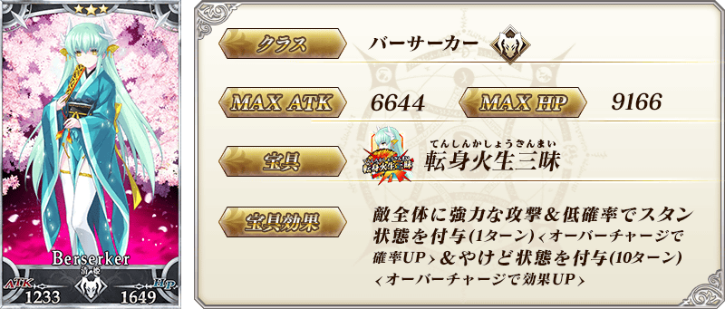
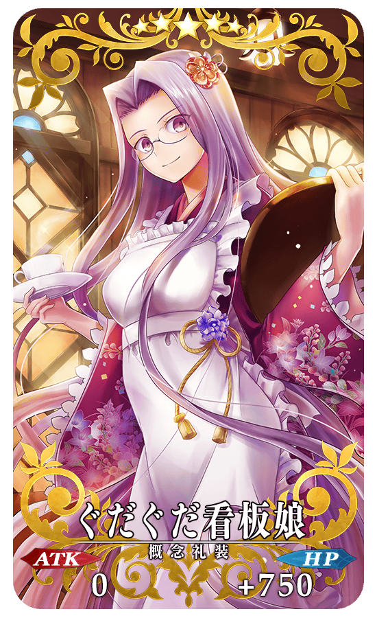
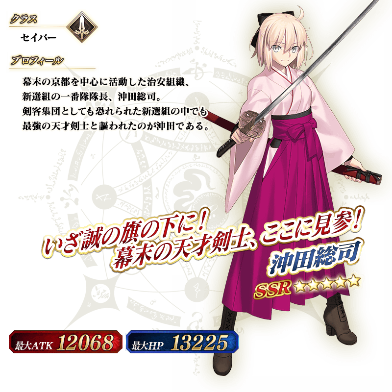
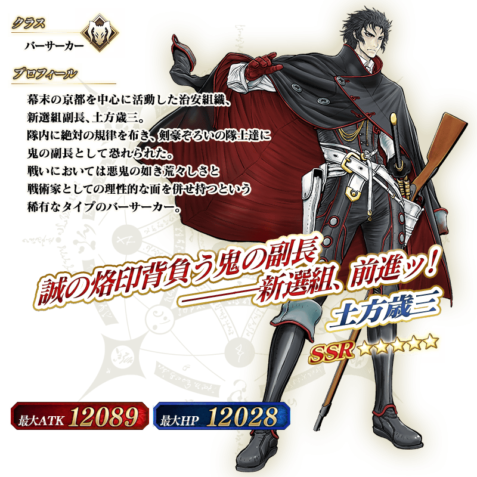

◆「京漫展2017出展記念Pick Up召喚(每日交替)」期間◆
期間:2017年9月13日(三) 17:00 ～ 9月27日(三) 11:59
為了記念2017年9月16日(六) ～ 9月17日(日)的連續2天舉辦的京都國際漫畫・動畫展覽2017的出展，舉辦「京漫展2017出展記念Pick Up召喚(每日交替)」。
這次是從穿日式服裝Servant中以期間限定「★5(SSR)沖田總司」與「★5(SSR)土方歲三」以每日交替Pick Up！
另外「★4(SR)鈴鹿御前」「★4(SR)玉藻貓」「★3(R)俵藤太」「★3(R)牛若丸」「★3(R)風魔小太郎」「★3(R)清姬(Berserker)」常駐Pick Up。
還有期間限定概念禮裝「★5(SSR)ぐだぐだ看板娘」「★4(SR)打ち上げオーダー！」「★3(R)Fate ぐだぐだオーダー」Pick Up！
※「★3(R)Fate ぐだぐだオーダー」在Pick Up期間中，也能在友情點數召喚獲得。
詳情請在聖晶石召喚畫面左下的召喚詳細確認。
※沖田總司、土方歲三在Pick Up期間結束後，不會追加到故事召喚。
Pick Up期間中，期間限定Servant、期間限定概念禮裝、Pick Up Servant的出現機率提升！
10次召喚中確定1張★4(SR)以上和確定1位★3(R)以上的Servant！
※確定★4(SR)以上包含Servant和概念禮裝。
※所謂「出現機率提升」意指比同稀有度的Servant及概念禮裝出現機率更高的設定。
| 每日交替Pick Up期間 | 每日交替Pick Up內容 |
|---|---|
| 9月13日(三) 17:00 ～ 9月14日(四) 22:59 | 沖田總司 |
| 9月14日(四) 23:00 ～ 9月16日(六) 22:59 | 土方歲三 |
| 9月16日(六) 23:00 ～ 9月17日(日) 22:59 | 沖田總司、土方歲三 |
| 9月17日(日) 23:00 ～ 9月18日(一) 22:59 | 沖田總司 |
| 9月18日(一) 23:00 ～ 9月19日(二) 22:59 | 土方歲三 |
| 9月19日(二) 23:00 ～ 9月21日(四) 22:59 | 沖田總司 |
| 9月21日(四) 23:00 ～ 9月23日(六) 22:59 | 土方歲三 |
| 9月23日(六) 23:00 ～ 9月24日(日) 22:59 | 沖田總司、土方歲三 |
| 9月24日(日) 23:00 ～ 9月25日(一) 22:59 | 沖田總司 |
| 9月25日(一) 23:00 ～ 9月26日(二) 22:59 | 土方歲三 |
| 9月26日(二) 23:00 ～ 9月27日(三) 11:59 | 沖田總司 |
※請注意會以每日交替變更Pick Up的Servant。
介紹沖田總司、土方歲三的寶具演出！
在Fate/Grand Order官方網站內的公告中，公開了「★5(SSR)沖田總司」及「★5(SSR)土方歲三」的寶具演出。敬請確認。










|  |
★★★★★SSR |
 |
★★★★SR |
 |
★★★R |

